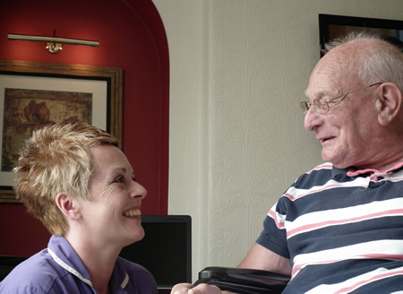

<div class="fluid-container">
    <div class="row">
        <div class="col-12">
            <p>Being one of the smallest nursing homes in the region Lyndhurst Park operates above average staff/client ratio; this means that we can provide personal care with each bedroom in close proximity to the sounds and hustle of people being around at all times. All of our staff are NVQ trained with 79% of them having been employed at Lyndhurst for 7 years or more and 56% over 10 years. This continuity of staff is very rare in a sector where staff turnover is constant. It is another indicator as to the quality of care fostered at the home while promoting an environment that equally nurtures and respects its staff as well as the clients.</p>
        </div>
        <div class="col-12">
            
        </div>
    </div>
</div>